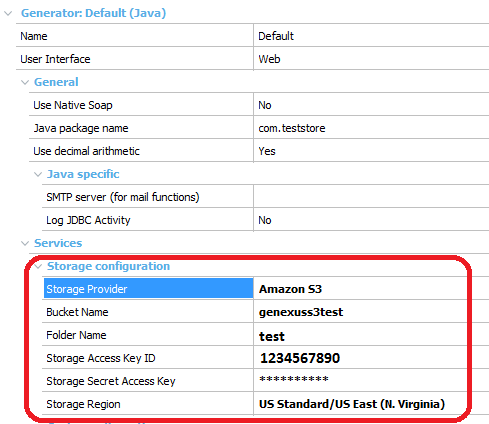
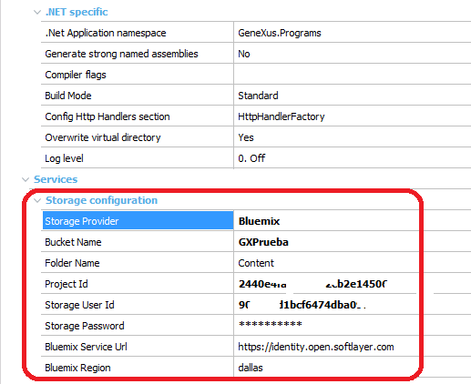
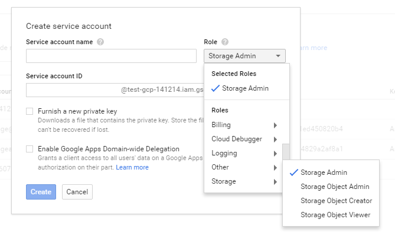

Storage Provider property (GeneXus 16 Upgrade 9 or prior)
It determines the storage provider for Multimedia files used in the Knowledge Base. Through the Storage Provider property, you can select among different external storage providers.
Values
Description
Depending on the Storage Provider used, different additional properties are available to configure the storage location. These properties are grouped under the Services section. It's a generator's and object's property.
Let's see the case for each of the storage providers supported.
|
| Bucket name | To upload your (multimedia) data, you first create a bucket in one of the AWS regions. It's a repository where you can store data grouped by folders. You can then upload any number of objects to the bucket. Click here for more information. If the bucket doesn't exist, the application creates it, unless the user has no privileges to do so. |
| Folder Name | It's a folder inside the Bucket structure. If it doesn't exist, it is created by the application. A folder with the same name as the table is created under the Folder specified in this property, along with another folder that has the same name as the multimedia attribute. The multimedia file is stored under the latter folder. |
| Storage Access Key ID | S3 Access Key ID.(*) |
| Storage Secret Access KEY | S3 Secret Access Key. (*) |
| Storage Region | To reduce data latency in your applications, most Amazon Web Services offer a regional endpoint to make your requests. Click here for more information. |
| Storage Endpoint | To enable fast transfers of files over long distances between your client and an S3 bucket. The possible values are Standard, Accelerated, Dual-Stack Accelerated. For more information see here. Prerequisites: Transfer Acceleration must be enabled on the bucket. Available as since GeneXus 15 upgrade 2. |
(*) If these properties are left empty, they will be instantiated in runtime from environment settings in the Amazon EC2 instance. This option (to left them empty) is available since GeneXus 16 upgrade 3.

Bluemix
| Bucket Name | It's a repository where you can store data grouped by folders. |
| Folder Name | It's a folder inside the Bucket structure. If it doesn't exist, it is created by the application. |
| Project Id | Also known as tenant name, it is used to group users. |
| Storage User Id | Open Stack user. |
| Storage Password | Open Stack user's password. |
| Bluemix Service URL | URL to access the server. |
| Bluemix Region | Region of the server. |

It works for any Open Stack instance that uses Identity API v3.0.
Microsoft Azure
| Public Container Name | It's a repository where you can store data. |
| Private Container Name | It's a repository where you can store data. Used for storing Excel files and handling private files. See Storage Provider API. |
| Account Name | An Azure storage account provides a unique namespace to store and access your Azure Storage data. |
| Access Key | Access Key for the account. |
Click here for more information about Azure Storage.
Google Cloud Storage
| Bucket Name | It's a repository where you can store data grouped by folders. |
| Folder Name | It's a folder inside the Bucket structure. If it doesn't exist, it is created by the application. |
| Service Account Key | The complete contents of the .json file generated as service account key.
To get the service account key, open the Google console, go through API Manager/Credentials, and then Create Credentials/Service account key. The service account key should belong to the Storage Admin role:  |
| Project Id | Id of the project. |
| Application Name | Name of the application sent in every request's headers. |
How to apply changes
To apply changes made by this property, do a Build with this Only of the object.
Configuration file
The CloudServices.config file is updated as any property changes. Unless you change the Storage Provider, there's no need to do any build. Implementation Details: When the CloudServices.config file is found in the web application, multimedia files are stored using the settings declared in that file. On the other hand, if the file isn't found, multimedia files are stored in the database. The file is read only once when the application starts, so if you change the file settings you need to restart the web application.
Scope
Platforms: Web(.Net, Java)
See Also
External Storage for Multimedia for more detailed information.